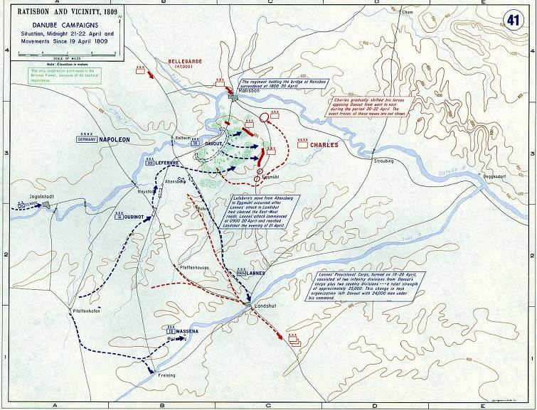
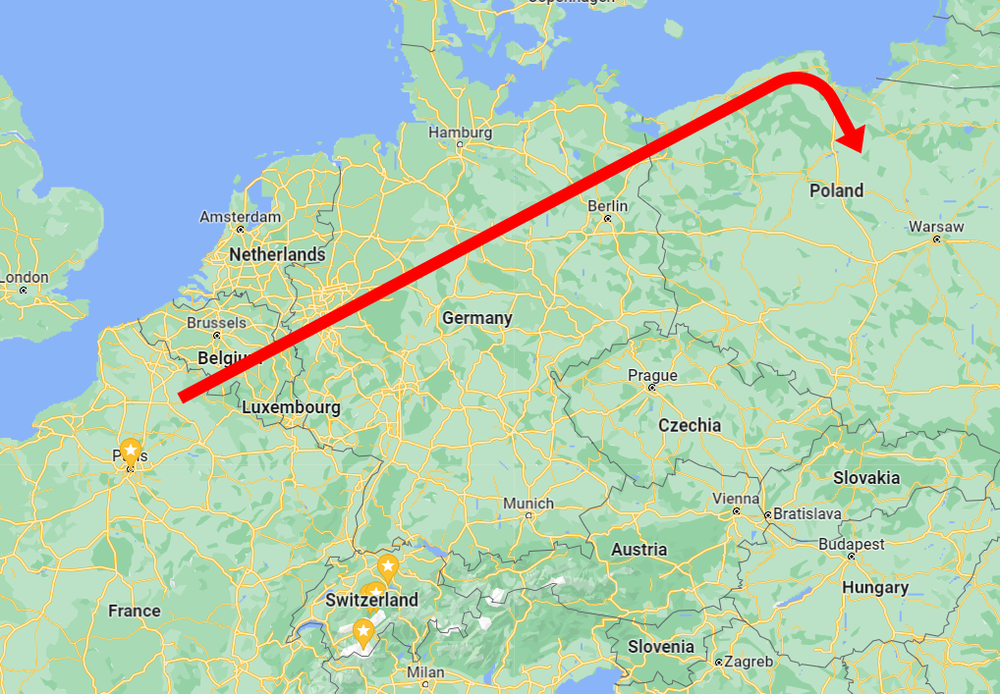
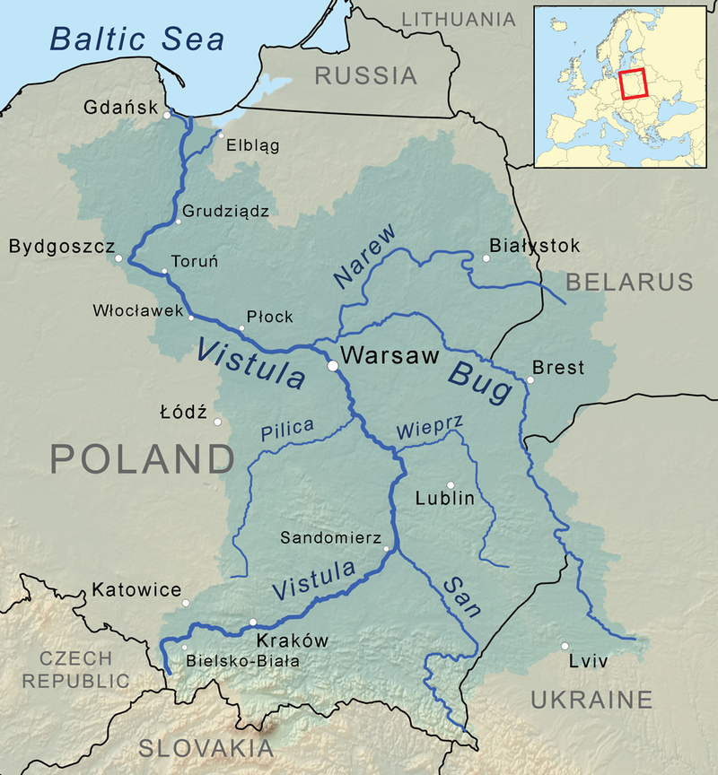
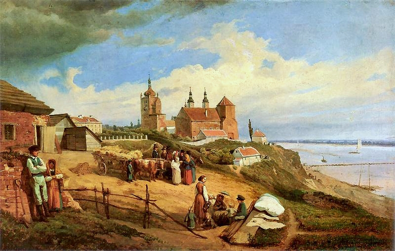
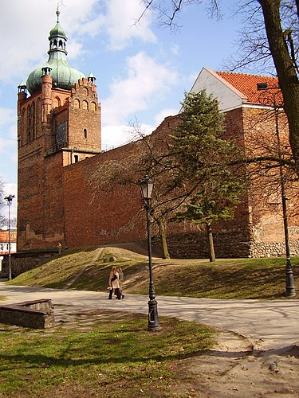
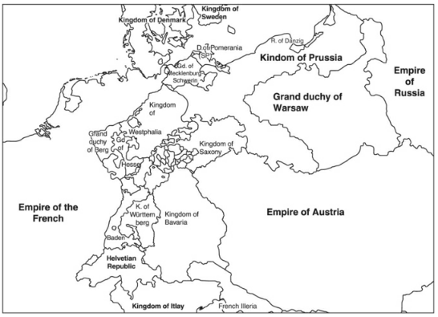

1813년, 러시아군을 맞이하는 나폴레옹의 마스터 플랜
게시: 2022-03-14T06:30:52+09:00
병력과 물자, 그리고 돈 문제를 해결한 나폴레옹은 이제 구체적인 작전 방안을 마련해야 했습니다. 이건 나폴레옹과 같은 군사 천재에게는 전혀 어려운 일이 아니었습니다. 그는 빌나와 폴란드를 거쳐 후퇴하면서 이미 모든 전략을 머릿 속에 구상하고 있었습니다. 하지만 1813년, 폴란드를 거쳐 독일을 침공해올 러시아군을 상대하기 전에, 먼저 과거 나폴레옹이 주로 어떤 전략을 써서 적군을 요리했는지 살펴보실 필요가 있습니다. 1805년 아우스테를리츠, 1807년 예나-아우어슈테트, 1809년 아스페른-에슬링 전투를 보면 대충 나폴레옹의 수법을 예측하실 수 있습니다. 이런 사례들을 보시면 공통적으로 나타나는 점이 3가지 있습니다. 1) 최선의 방어는 공격 모든 경우에 있어 천만뜻밖에도, 나폴레옹은 먼저 전쟁을 시작한 적이 없었습니다. 이 세가지 경우 모두 전쟁 선포는 상대측이 먼저 했습니다. 다만 나폴레옹은 절대 적군이 공세를 취하도록 기다리지 않고 언제나 적진으로 쳐들어갔습니다. 보통은 공격에 비해 수비가 유리하다는 점을 생각하면 이건 좀 의아한 일처럼 보일 수 있습니다. 그러나 나폴레옹이 전쟁을 하는 목표는 언제나 적을 평화협상장으로 끌어내는 것이었고, 그러기 위해서는 어차피 결국 적국으로 쳐들어가야 했습니다. 게다가 나폴레옹은 비축 식량이 충분한 이탈리아나 독일 등지에서 주로 싸웠으니, 공격군의 보급이 어렵다는 문제를 현지 조달을 통해 쉽게 해결할 수 있었습니다. 2) 경쟁력은 팔이 아니라 다리에 나폴레옹은 절대로 상대방보다 적은 병력으로는 싸우지 않았습니다. 이게 꼭 프랑스군의 규모가 항상 유럽 최대를 유지했다는 뜻이 아닙니다. 전체적인 병력이 적이 더 많은 상황에서도, 어떻게든 아군이 적군보다 더 많은 병력을 가지는 순간과 장소를 골라서 전투를 벌였다는 뜻입니다. 이건 사실 누구나 다 그렇게 하고 싶어 했습니다. 적군은 그걸 하지 못하는데 나폴레옹은 그걸 해낼 수 있었던 것은 오로지 프랑스군의 뛰어난 기동력 덕분이었습니다. 가령 1805년 아우스테를리츠 전투에서는 오스트리아-러시아 연합군보다 나폴레옹의 군대가 더 적었기 때문에 오스트리아-러시아군은 자신감을 가지고 전투에 나섰습니다. 그러나 수십km 밖에 주둔해있던 다부가 당장 다음날 새벽 현장에 나타나는 바람에 전투 상황이 완전히 뒤집어졌지요. 1807년 예나에서는 아직 제대로 집결하지도 못한 상태의 프로이센군을 나폴레옹의 군단들이 순식간에 집결하여 난타한 끝에 박살을 낸 것입니다. 1809년의 아스펜-에슬링 전투는 로바우 섬의 다리가 끊기는 바람에 기동력을 상실한 나폴레옹이 패배를 겪은 좋은 예입니다. 그러나 그 바로 직전에 벌어진 란츠후트(Landshut) 기동전을 보면 프랑스군이 오스트리아군을 제압할 수 있었던 것은 오로지 그 기가 막힌 기동력 덕분이었던 것을 보실 수 있습니다.

(1809년 4월의 란츠후트 기동전의 모습입니다. 지도 남쪽의 이자르(Isar) 강변의 란츠후트와 북쪽 도나우(Donau) 강변의 레겐스부르크(Regensburg, 프랑스어로 Ratisbonne) 사이에서 벌어진 일련의 전투에서 프랑스군은 압도적인 기동력을 보여주며 오스트리아군을 제압했습니다.) 3) 전쟁의 목표는 적 주력부대의 궤멸 이건 나폴레옹의 전매특허였습니다. 기존 유럽의 전투는 국민들간의 전투라기보다는 왕가들끼리의 이권 투쟁이었고, 따라서 어떤 도시나 요새 등을 점령하는 것이 목표였습니다. 물론 그러기 위해서는 적군과 야전을 벌여 싸워 이겨야 했기 때문에 그게 그거 아니냐고 할 수 있습니다만, 분명한 차이가 있었습니다. 나폴레옹은 적 주력부대를 포착하여 격파하기만 하면 도시나 요새는 부수물로 손아귀에 들어올 뿐이라고 보았고, 따라서 언제나 적 주력부대가 어디에 있는지, 만약 그 규모가 크다면 이를 어떻게 분산할 수 있는지에 집중했습니다. 그렇게 싸우는 목표가 분명했기 때문에 항상 방어가 아니라 공격을 했던 것이고, 어떻게 하면 적이 집결하기 전에 격파할까, 또는 어떻게 하면 적을 분산시킬 수 있을까를 고민했던 것입니다. 그러니까 나폴레옹은 복잡한 지문이 주어진 문제를 풀 때 그 문제의 핵심을 간파하는 능력이 뛰어난 학생이라고 할 수 있습니다.
나폴레옹 전략의 핵심은 이렇게 3가지로 요약할 수 있습니다. 이런 나폴레옹적인 요소 3가지를 보시고 나니, 이제 벌어질 1813년 전쟁에서 그의 전략을 예상하실 수 있겠습니까? 이번에도 당연히 나폴레옹은 프랑스에 앉아서 적군을 기다리지 않았습니다. 그리고 여전히 기동력으로 승부를 보려고 했습니다. 그가 그린 큰 그림은 아래 그림과 같은 것이었습니다.

(지도에는 잘 표시되어 있지 않지만, 결국 비스와(Vistula, 폴란드어로 Wisła) 강 하구에 있는 단치히까지 가서 거기서 비스와 강을 끼고 남하하는 것입니다.) 무슨 작전이 이렇게 간단한가 싶겠습니다만, 사실 이 큰 그림은 구체적인 작전이라기보다는 하나의 마스터 플랜이라고 할 수 있습니다. 이 기본 전략의 핵심은 2가지였습니다. 1) 비스와 강까지 직진하여 러시아군의 배후를 위협 손자병법에 이르기를 시정잡배는 눈 앞의 적 탱크와 싸우고 대인배는 후방의 적 트럭을 친다...고 하지는 않았습니다만, 분명히 적의 보급 차단에 대해 아래와 같이 매우 중요하게 언급하기는 했습니다. 所謂古之善用兵者, 能使敵人, 前後不相及, 衆寡不相恃, 貴賤不相救. 소위고지선용병자, 능사적인, 전후불상급, 중과불상시, 귀천불상구. 소위, 고대로부터 전쟁을 잘하는 자는, 적군으로 하여금, 전후방의 부대가 서로 급히 연합하여 도울 수 없게 하고, 귀중한 전투 부대와 이를 지원하는 보급부대가 서로를 구원할 수 없게 한다. (나무위키에서 퍼왔습니다.) 나폴레옹의 의도는 간단했습니다. 프랑스군이 러시아군과 정면 충돌하지 않고 그 배후를 돌아 비스와 강변을 장악하면 러시아군은 본국과의 보급 및 연락선 단절을 염려하여 후퇴할 수 밖에 없을 것이라는 점이었습니다. 이건 여러가지를 생각하게 만드는 전략이었습니다. 일단 이건 나폴레옹이 러시아에서 철수할 수 밖에 없었던 상황을 그대로 재현하고자 한 것입니다. 마치 뭔가에 홀리기라도 한 것처럼 모스크바에 앉아 무작정 알렉산드르의 평화 사절을 기다리던 나폴레옹도 코삭 기병들에 의해 자신에게 오던 편지가 강탈되자 비로소 모스크바를 떠나기로 했지요. 특히 베레지나의 다리를 건널 때 나폴레옹도 정말 노심초사했던 모양입니다. 그러니 러시아군도 자신과 똑같을 것이라고 생각한 것입니다. 게다가 더욱 중요한 점이 있습니다. 이 전략은 나폴레옹의 특징 1번과 2번, 즉 기동력을 살린 공격이라는 점에서 기존 전략의 특성을 그대로 유지한 것입니다. 그러나 3번, 즉 적 주력부대의 궤멸을 목표로 한다는 점에서는 크게 벗어난 것입니다. 천하의 나폴레옹이 러시아군의 격멸이 아닌 그 후퇴를 목표로 삼은 것입니다! 이는 나폴레옹이 그래도 현실 감각을 완전히 상실한 것은 아니라는 것을 보여줍니다. 아무리 순식간에 20만 군대를 새로 편성할 수 있다고 하더라도, 그렇게 신병들로 구성된 군대가 기존의 그랑다르메와는 질적인 면에서 큰 차이가 있을 것이라는 것을 나폴레옹도 잘 알고 있었던 것입니다.

(비스와 강의 지도입니다. 단치히(Danzig, 폴란드어로 그단스크 Gdansk), 토룬(Torun), 프오츠크(Płock)이라든가 하는 주요 도시들이 보입니다.)

(프오츠크는 원래 폴란드 도시였다가 폴란드가 분할되면서 프로이센 손에 넘어갔다가, 1815년 이후 결국 러시아 손에 들어갔습니다. 워이체흐 게르손(Wojciech Gerson)이 그린 이 그림에서 보여지는 프오츠크는 1852년의 모습입니다. 강변에 보이는 웅장한 건축물은 프오츠크 성입니다.)

(게르손의 그림 속에 나오는 프오츠크 성은 지금도 잘 보존되어 남아 있습니다. 원래 15세기에 고딕 양식으로 지어진 마소비아(Masovia) 공작의 성이라고 합니다.) 2) 최대한 오스트리아와는 거리를 둔다 폴란드와 독일을 똑바로 뚫고 들어오는 러시아군을 우회하기 위해서는 (당연한 말이지만) 두 가지 길이 있었습니다. 북쪽길과 남쪽길이지요. 나폴레옹은 북부 독일, 즉 프로이센을 관통하는 경로를 택했습니다. 이는 러시아군의 위협 속에서 농성 중일 오데르 강 하구의 슈테틴(Stettin)과 비스와 강 하구의 단치히(Danzig)를 구원하기 위한 것도 있지만, 더 큰 이유는 바로 오스트리아였습니다. 황후 마리 루이즈의 모국이자 나폴레옹에게는 장인어른의 나라인 오스트리아는 당연히 프랑스와 군사동맹을 맺은 제국이었지만, 이미 러시아 원정에서 대패를 경험한 나폴레옹은 결코 오스트리아를 믿을 수 없었습니다. 오스트리아가 러시아와 연합하여 프랑스를 공격할 것이라고는 생각하지 않았지만, 나폴레옹은 절대 오스트리아를 의도적으로든 오해 때문이든 자극하고 싶지 않았습니다.

(1810년 유럽의 지도입니다. 1807년 틸지트 조약 이후 찌그러든 프로이센에 비해 오스트리아는 아직 제국의 면모를 갖추고 있는 것을 보실 수 있습니다.) 잠깐, 오스트리아는 믿을 수 없다고요? 그렇다면 프로이센은 믿을 수 있다는 이야기일까요? 그 반대였습니다. 원래부터 프로이센을 믿지 않았던 나폴레옹은 이미 리가(Riga) 방면에서 막도날 휘하에 있던 요크 대공이 러시아와 단독 강화를 맺었다는 것을 잘 알고 있었습니다. 그것이 프로이센이 자신을 배신한 것이라고 꼭 볼 수는 없었습니다. 최소한 프로이센 국왕 프리드리히 빌헬름은 요크 대공을 반역죄로 기소하겠다고 나섰으니까요. 그 말을 액면 그대로 받아들일 수는 없었던 나폴레옹은 프로이센을 경유하는 경로를 택함으로써 프로이센의 이탈을 막고자 했습니다. 그리고 나폴레옹은 오스트리아에 비해 상대적으로 프로이센을 얕보고 있었습니다. 그럴 수 밖에 없는 이유가 있었습니다. 나폴레옹과 프로이센은 대체 무슨 사연이 있었던 것일까요? 과연 프로이센은 정말 나폴레옹을 배신했을까요? 오스트리아는 어땠을까요? 1813년 봄의 작전에 들어가기 전에, 프로이센의 사연부터 먼저 들여다 보시겠습니다. Source : The Life of Napoleon Bonaparte, by William Milligan Sloane Napoleon and the Struggle for Germany, by Leggiere, Michael V
https://en.wikipedia.org/wiki/Vistula https://en.wikipedia.org/wiki/P%C5%82ock https://en.wikipedia.org/wiki/P%C5%82ock_Castle